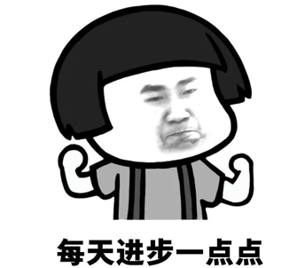
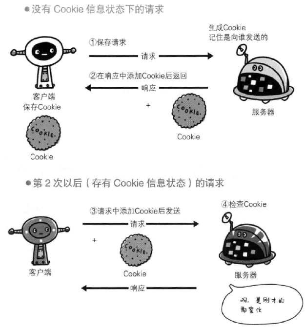
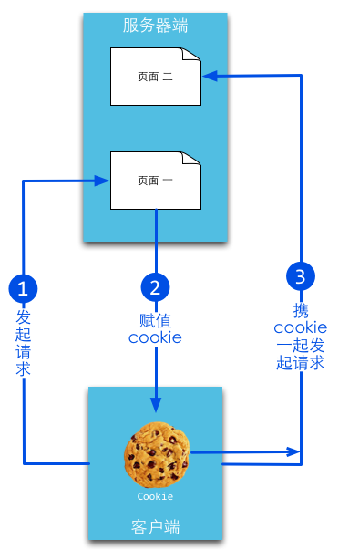
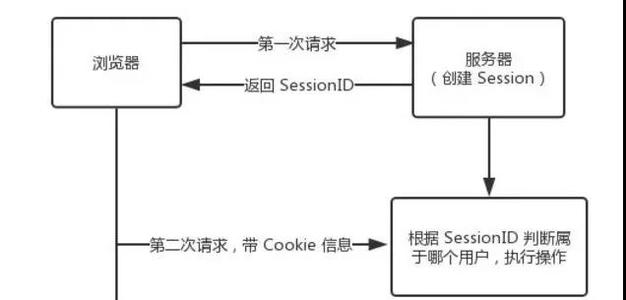

状态管理
 参考文档《Web之状态管理》完成填空 什么是状态管理： 状态指的是，管理指的是的修改。 WEB应用中的会话是指一个客户端浏览器与WEB服务器之间连续发生的过程。 WEB应用的会话状态是指WEB服务器与浏览器在会话过程中产生的，借助会话状态，WEB服务器能够把属于同一会话中的一系列的关联起来。 状态管理的两种常见模式： ：将状态保存在客户端。代表性的是Cookie技术。 ：将状态保存在服务器端。代表性的是session技术（服务器传递sessionID时需要使用Cookie的方式）和application
Cookie API练习
Cookie 是一项在客户端( 浏览器 )上保存用户少量数据的技术. Cookie 有个数和大小的限制，大小一般是 在浏览器上操作cookie使用的是对象 添加一个名称为 name, 值为 john 的 cookie, JS的语法是: ; 加一个名称为 age, 值为 18, 有效时长(有效期)为 1 小时的cookie, JS的语法是: ; 获取当前页面所有的cookie值, JS的语法是: ; 删除名为 age 的cookie, JS的语法是: ; 在服务器端cookie被封装成类 创建一个名称为 name, 值为 john 的 cookie 对象 c1, Java的语法是: ; 续: 设置该 cookie 对象的有效期为 5 分钟 ; 续: 设置该 cookie 对象的路径为 /page/test/ ; 续: 删除该 cookie 值 ; 续: 将该 cookie 对象添加到响应对象中, 假设响应对象名为 response ; 从请求对象中获取所有的 cookie 对象, 假设请求对象名为 request, 获取到cookie存放到变量 cookies 中 ;
Cookie 概述
 参考文档《Web之状态管理》完成填空 Cookie是在浏览器访问WEB服务器的某个资源时，由在HTTP响应消息头中附带传送给的一小段数据，WEB服务器传送给各个客户端浏览器的数据是可以各不相同的。 一旦WEB浏览器保存了某个Cookie，那么它在以后每次访问该WEB服务器时，都应在HTTP请求头中将这个Cookie。 WEB服务器通过在HTTP响应消息中增加Set-Cookie响应头字段将Cookie信息发送给浏览器，浏览器则通过在HTTP请求消息中增加Cookie请求头字段将Cookie回传给WEB服务器。 一个Cookie只能标识一种信息，它至少含有一个标识该信息的名称（）和设置值（）。 一个WEB站点可以给一个WEB浏览器发送多个Cookie，一个WEB浏览器也可以存储多个WEB站点提供的Cookie。 现在有两个方法, 是该图3个步骤中需要用到的方法, 请将其填写到对应的步骤中, 如果没有请填写 "无" 代码一: addCookie(); 代码二: getCookies(); 步骤1: 步骤2: 步骤3: 如果要设置 cookie 的有效期, 应该是在第步中完成
Cookie的优缺点
 参考文档《Web之状态管理》完成填空 优点： ：Cookie 可以在浏览器会话结束时到期，或者可以在客户端计算机上无限期存在，这取决于客户端的到期规则，不需要任何服务器资源，Cookie 存储在客户端并在发送后由服务器读取。 ：Cookie 是一种基于文本的轻量结构，包含简单的键值对。 ：客户端计算机上 Cookie 的持续时间取决于客户端上的 Cookie 过期处理和用户干预，Cookie 通常是客户端上持续时间最长的数据保留形式 缺点： ：大多数浏览器对 Cookie 的大小有 4096 字节的限制，尽管在当今新的浏览器和客户端设备版本中，支持 8192 字节的 Cookie 大小已愈发常见。 ：有些用户禁用了浏览器或客户端设备接收 Cookie 的能力，因此限制了这一功能。 ：Cookie 可能会被篡改。用户可能会操纵其计算机上的 Cookie，这意味着会对安全性造成潜在风险或者导致依赖于Cookie 的应用程序失败。
Session API练习
有 Servlet 定义如下, 请求按要求填写代码 // 导入会话对象的类 ; @WebServlet("/hello.s") public class HelloServlet extends HttpServlet { protected void doGet(HttpServletRequest request, HttpServletResponse response) throws ServletException, IOException { // 获取会话对象, 将该对象 HttpSession session = ; // 获取会话id String id = ; // 添加一个名为 like, 值为 java 的属性 ; // 返回会话创建时间 long time = ; // 返回在会话时间内web容器接收到客户最后发出的请求的时间 long last = ; // 获取名为 like 的属性值 String like = ; // 移除名为 like 的属性值 ; // 使会话失效，同时删除属性对象 ; } }
Session 实现机制
 参考文档《Web之状态管理》完成填空 Session用于。Session指的是在一段时间内，单个客户与Web服务器的一连串相关的。 在一个Session中，客户可能会多次请求访问同一个网页，也有可能请求访问各种不同的服务器资源。 session被用于表示一个，在网站访问中一般指代客户端浏览器的进程的过程。 session其实就是网站分析的访问（visits）度量，表示一个。 session的常见实现形式是cookie（session cookie），即未设置过期时间的cookie，这个cookie的默认生命周期为，只要关闭浏览器窗口，。 实现机制是当用户发起一个请求的时候，服务器会检查该请求中是否包含， 如果未包含，则系统会创造一个名为的输出 cookie返回给浏览器(只放入内存，并不存在硬盘中)，并将其以HashTable的形式写到服务器的内存里面； 当已经包含sessionid时，服务端会检查找到与该session相匹配的信息，如果存在则直接使用该sessionid，若不存在则重新生成。 这里需要注意的是session始终是由，并非浏览器自己生成的。